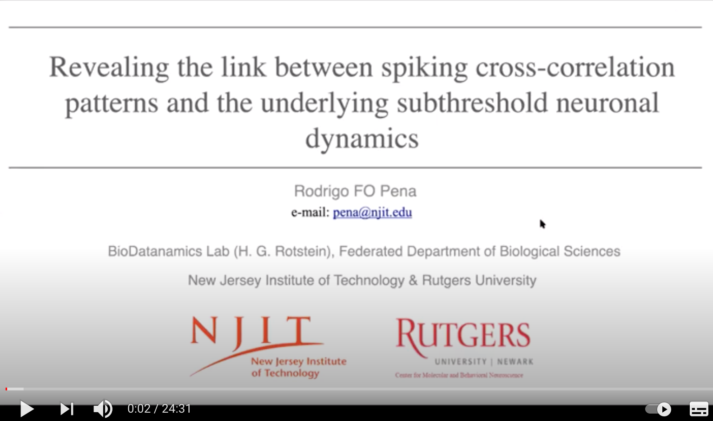

Check my presentation at Dynamics Days 2020 - Digital
I gave a short tutorial on information theory focused on neuroscience at NJIT (2021), check my slides: Download
I've worked on slope/chord/derivative - conductance(s) and presented an organized view of that (2021): Download
This is a presentation I gave at NYU (Courant) in a Colloquium that I was invited (2020), it's an organized view of some worked derived from my PhD thesis: Download
Together with Horacio Rostein and Antonio Roque we gave a short course on Neuronal resonance, check my slides for the 2nd day (2020): Download